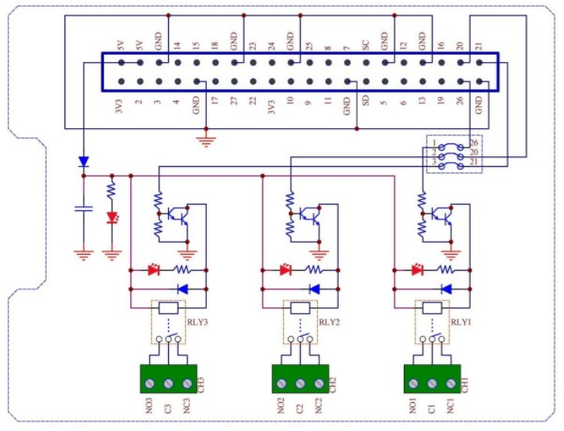
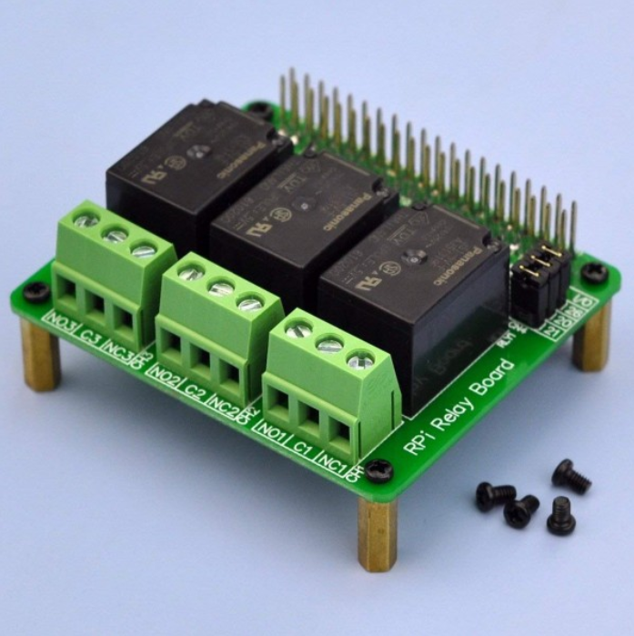
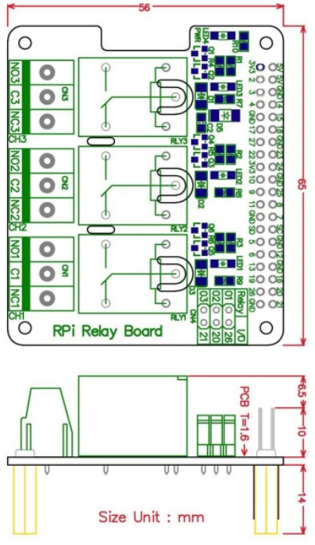
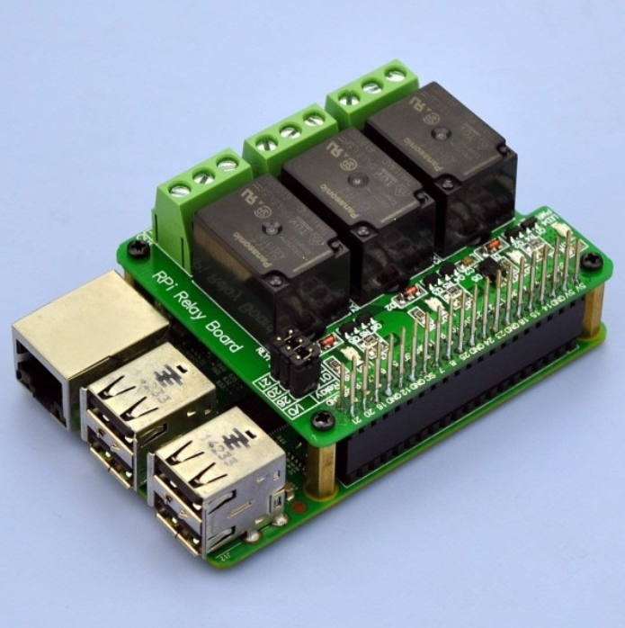

<p>
    Supports Raspberry Pi A+ / B+ / 2B / 3B, the RPi Relay Board gives your Pi the ability 
    to control high voltage/high current devices, easily makes normal home appliances become intelligent.
    High quality Panasonic JS1-5V-F power relays, loads up to 10Amp/250VAC, 5Amp 30VDC.
    One LED for power and three LEDs for relays status indicating. Darlington transistors 
    circuit driving relay, improve the reliability of action. Relay control jumper, allows 
    to control the relays by custom pins other than the default pins
    Terminal blocks: pitch - 5.0mm/0.197", wire size 26~12 AWG / 2.5mm square, stripping 
    length 7mm/0.28", Metric M2.5 slotted screw. 2 x 20 pins expansion pin header, height 10mm/0.39"
    Package included: 1x RPi Relay Board, 4x M2.5 14mm brass standoffs, 8x M2.5x4mm metal screws.
</p>





